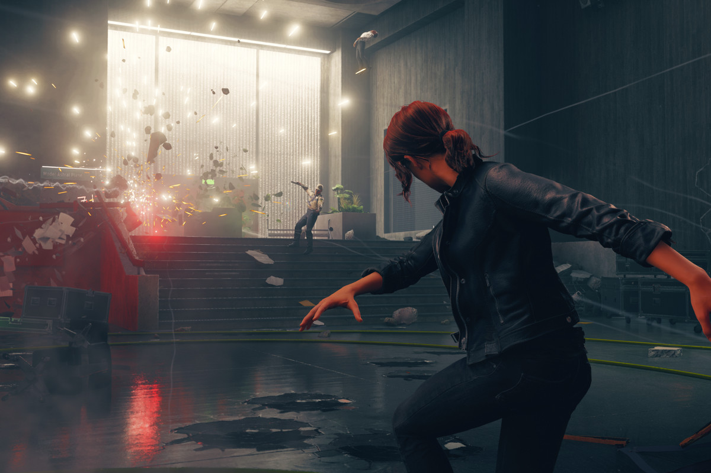

Iwish Remedy could make even more games, because Control reminded me of this studio’s knack for crafting engrossing, oddball worlds with an incredible sense of place. Control is perhaps Remedy’s weirdest yet, with the talking upside pyramid who’s also your boss being about the sixth-strangest part. But thanks to sharp writing, a set of awesome and varied psychic combat abilities, and an impressively thought-out world, it was easy to wrap my head around what made this adventure tick. Infiltrating the Federal Bureau of Control as Jesse Faden and her blue wavy spirit buddy, I found myself fascinated. The Bureau’s headquarters seems like a drab, nondescript office building at first, and Jesse’s search for answers to events in her past was equally mundane at first. But Control quickly reveals what lies behind those concrete walls: within the first chapter I became both the janitor’s assistant and the new acting director of the Bureau.
As a kid who grew up on the X-Men, I’ve always wished I’d discover some latent psychic powers, or at least the ability to grow my fingernails super fast or something. Control’s lineup of moves is the closest I’ve gotten thus far to wielding supernatural abilities, and Remedy has made each of them fun to use. There’s enough variety for most of the 10-hour story campaign to make almost every move feel important.
Jesse’s telekinesis is the best of the bunch. With a wave of her hand a crate or table or ever-reliable chunk of concrete snaps to your side with satisfying urgency, and then hurls at foes and the destructible environment with just as much of a thrilling zoom. I easily relied on this form of attack the most, and while it’s not quite the same level of tactile satisfaction as Kratos’ Leviathan ax, the oomph of hurling heavy objects around with my mind is as close as I’ve felt since. The other abilities aren’t quite as handy but mostly still fun to use. Late-game hovering allows for even more mobility, and Jesse’s shield is great when enemies with telekinesis of their own force you to go on the defensive. Control’s combat encourages constant movement, and finding cover is frequently necessary to survival, even if you have to summon it yourself. The standard difficulty level isn’t unfairly hard, but I died a fair number of times when I didn’t think to balance both offensive and defensive skills and got too cocky with jumping into the fray, for example. Getting up close and using the psionic wave force melee ability can be advantageous when you’re down to just a couple of foes, but any more than that and short-range combat usually led to a swift death, in my experience.
When it comes to enemy variety, however, Control doesn’t match the variety of Jesse’s combat options. The Hiss-controlled members of the Bureau who are now fighting against you typically have one or two of your own moves and ammo options, and it is fun to see how Control mixes and matches them in the early goings. But by the end of the story’s 10 chapters there was little challenge to these encounters, other than fighting Control’s performance. When too many enemies were on screen firing at me and getting blown up by my explosives at any given time, I ran into some huge hitching issues – even on my PS4 Pro. They’d only persist for a few seconds, but those seconds are often crucial and led to frustrating deaths. Those were mitigated by Control’s forgiving checkpoint system, at least, and it hasn’t stopped me from continuing to explore the Oldest House – which is Control’s main setting and the headquarters of the Bureau – even after completing the story.
Control is set in an engrossingly weird paranormal world that I couldn’t help but explore. Jesse’s versatile psychic skills and main weapon make for thrilling ranged combat. And thanks to a strong supporting cast, a well-written script, and plenty of intriguing breadcrumb trails, I’ve thoroughly enjoyed my adventure through the shifting rooms of Oldest House. Jesse’s personal story feels like an afterthought next to that, but there’s enough to Control’s world that I remain invested in uncovering every secret, even though the story’s over.
Comment Here